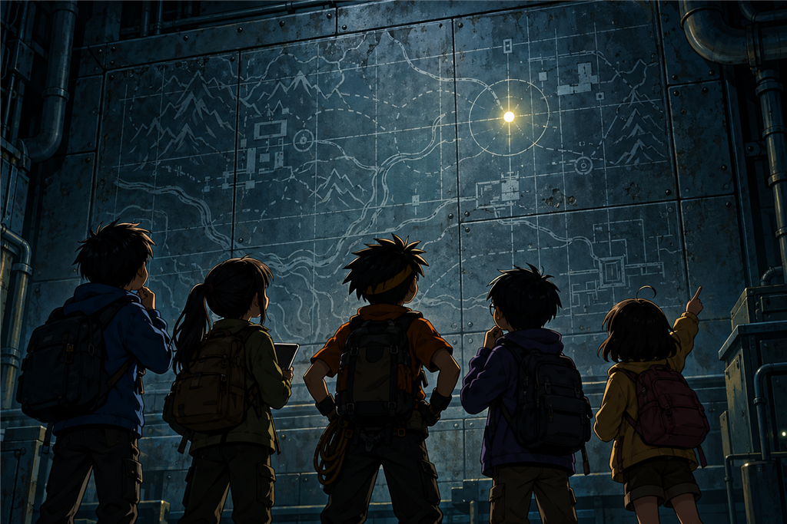
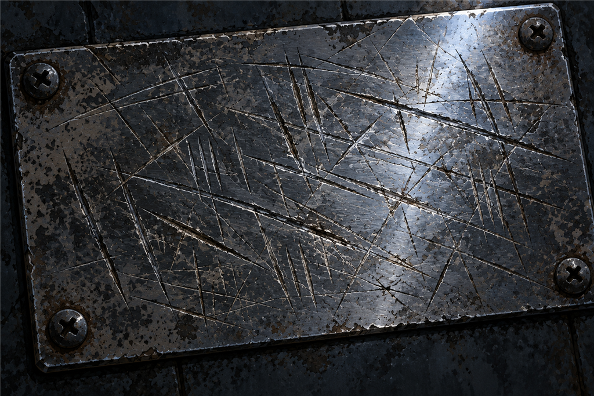

แผนที่สิบสองจุด
เวลาอ่านประมาณ 12 นาที · Map / Scale / Coordinates
ห้องข้างในกว้างกว่าห้องโถงเกือบเท่าตัว
เพดานสูงขึ้น มีโต๊ะเหล็กยาวตัวหนึ่งวางชิดผนังด้านซ้าย เก้าอี้สามตัวคว่ำอยู่บนโต๊ะเหมือนคนเก็บของก่อนปิดบ้านไปนาน ๆ
แต่สิ่งที่ทุกคนมองคือผนังฝั่งไกลสุด
ทั้งผนังเป็นแผงใหญ่แผ่นเดียว สูงเกือบจรดเพดาน กว้างกว่าช่วงแขนของเด็กสามคนต่อกัน
มันมืดเกินกว่าจะเห็นรายละเอียด เห็นแค่เงาของรูปร่างยาว ๆ รูปหนึ่งอยู่กลางแผง กับจุดเล็ก ๆ หลายจุดที่สะท้อนแสงสีเขียวจาง ๆ จากห้องโถงด้านหลัง
“รอก่อน” นนท์พูด
ไม่มีใครเดินเข้าไป ทุกคนรู้กติกาแล้วโดยไม่ต้องบอกกัน
มีนาวางใบไม้แห้งลงบนพื้นตรงปากทางเดิน รอดูอยู่สักพัก ใบไม้ขยับเข้าไปข้างในนิดเดียวแล้วนิ่ง
“อากาศเดินอยู่ ไม่แรงด้วย” เธอรายงาน “ข้างในเชื่อมกับข้างนอก”
“เข้าได้” นนท์ตอบ “แต่เดินชิดผนัง อย่าเพิ่งแตะอะไร”
1
พวกเขารอจนถึงจังหวะที่พื้นสั่น
กึก… ครืนนนน…
โคมฉุกเฉินในห้องนี้สว่างขึ้นดวงหนึ่ง ไม่สว่างมาก แต่พอให้เห็นแผงทั้งแผงเป็นครั้งแรก
ฟ้าอ้าปากค้าง
บนแผงคือแผนที่ประเทศไทย ทำด้วยแผ่นโลหะเซาะร่องเป็นเส้นชายฝั่ง เส้นแม่น้ำ และเส้นแนวภูเขา ไม่ได้พิมพ์ด้วยหมึก แต่ถูกกัดลงไปในเนื้อโลหะเลย
และบนแผนที่นั้นมีจุดเล็ก ๆ ฝังอยู่หลายจุด กระจายไปทั่วประเทศ
“หนึ่ง สอง สาม...” ฟ้าเริ่มนับทันที
“ช้า ๆ” ปั้นบอก “นับให้ครบแล้วนับซ้ำ”
ฟ้านับสองรอบ ปั้นนับอีกสองรอบ แล้วเทียบกัน
“สิบสองค่ะ”
“สิบสองเหมือนกัน”
ข้างจุดแต่ละจุดมีตัวเลขเล็ก ๆ กำกับไว้ เลขหนึ่งอยู่เหนือสุด ไล่ลงมาเรื่อย ๆ จนถึงเลขสิบสองที่อยู่ใต้สุด
ต้นกล้าเดินเลียบผนังไปจนถึงจุดที่อยู่ตรงกลางค่อนไปทางซ้าย
“เจอแล้ว” เขาพูด “เลขเจ็ด”
จุดเลขเจ็ดไม่ได้สะท้อนแสงเหมือนจุดอื่น มันสว่างด้วยตัวเอง เป็นไฟสีเขียวดวงเล็กนิดเดียว
“นั่นคือเรา” นนท์พูดเบา ๆ
ห้องเงียบไปพักหนึ่ง
สามวันมานี้พวกเขาเป็นเด็กห้าคนที่หลงอยู่ในป่า แต่บนแผ่นโลหะนี้ พวกเขาเป็นจุดสีเขียวหนึ่งจุดบนแผนที่ประเทศไทย
“แล้วอีกสิบเอ็ดจุดคืออะไรคะ” ฟ้าถาม
“สถานีแบบเดียวกับที่เราอยู่” ปั้นตอบ “น่าจะใช่”
“แปลว่ามีอีกสิบเอ็ดแห่งทั่วประเทศเหรอ”
“ถ้าเดาถูกนะ”
ต้นกล้าเงยหน้ามองแผนที่ทั้งแผง “ใครสร้างของพวกนี้ไว้ทั่วประเทศ แล้วทำไมไม่มีใครพูดถึงมันเลย”
ไม่มีใครตอบ

สิบสองจุดทั่วประเทศ และมีจุดเดียวที่ยังมีไฟ
2
ฟ้าเป็นคนเดียวที่ไม่ได้มองแผนที่ใหญ่
เธอยืนอยู่ตรงเสาข้างแผง ตรงที่มีแผ่นโลหะเล็ก ๆ ติดอยู่สูงระดับอกผู้ใหญ่
“พี่คะ”
“อะไร” นนท์ถาม
“อันนี้เหมือนป้ายที่อยู่ตรงบันไดเลย”
ทุกคนเดินมาดู
เป็นแผ่นโลหะยาวแนวนอน มีเลข 07 อยู่มุมซ้าย และมีช่องสี่เหลี่ยมเรียงกันห้าช่องอยู่ถัดไป
ช่องทั้งห้าว่างเปล่า เหมือนป้ายที่พวกเขาเห็นตั้งแต่วันแรกที่เปิดประตูเข้ามา
“ห้าช่อง ห้าคน” ต้นกล้าพูดทันที “เหมือนพวกเราเป๊ะเลย”
“เราเพิ่งพิสูจน์ไปเมื่อวานว่าเลขห้าไม่ได้แปลว่าเรานะ” ปั้นเตือน
“ก็ใช่ แต่มันก็ยังห้าอยู่ดี”
ฟ้าไม่ได้ฟังทั้งคู่ เธอเขย่งขึ้นแล้วเอานิ้วแตะไปในช่องว่างช่องแรก
แล้วเธอก็หยุด
“มันไม่เรียบค่ะ”
“อะไรนะ” มีนาถาม
“ช่องนี้มันไม่เรียบ มันเป็นรอย ๆ”
มีนาคุกเข่าลงอุ้มฟ้าขึ้นให้สูงกว่าเดิมนิดหนึ่ง แล้วเธอเองก็เอามือลูบตาม
ผิวโลหะในช่องว่างนั้นไม่เรียบเหมือนผิวรอบ ๆ มันหยาบ มีรอยขีดเล็ก ๆ ถี่ ๆ ไปในทางเดียวกัน
“รอให้พื้นสั่นก่อน” นนท์บอก “ตอนไฟสว่างขึ้นเราจะเห็นชัดกว่านี้”
พอไฟสว่าง มีนาก้มลงมองจากมุมเฉียง ให้แสงกราดผ่านผิวโลหะ แทนที่จะมองตรง ๆ
“มีรอยขูด” เธอพูด “ทั้งห้าช่องเลย”
ต้นกล้าชะโงกเข้ามา “แปลว่าอะไร”
มีนาค่อย ๆ วางฟ้าลง แล้วหันมามองทุกคน
“แปลว่าช่องพวกนี้ไม่ได้ว่างมาตั้งแต่แรก”
ไม่มีใครพูดอะไรสักพัก
“เคยมีชื่ออยู่” นนท์พูดช้า ๆ “แล้วมีคนขูดมันออก”
ฟ้ามองแผ่นป้ายนั้นอีกครั้ง “ขูดทำไมคะ”
“ถ้ารู้ก็ดีสิ” ต้นกล้าตอบ
นนท์ลองเอาขอบกระดาษแผนที่ทาบลงบนช่องแรก แล้วเอาปลายปากกาถูเบา ๆ หวังให้รอยขูดโผล่ออกมาเป็นรูปตัวอักษร
ได้แค่รอยด่างเลอะ ๆ อ่านอะไรไม่ออกเลย
“ปากกาไม่ได้” เขาพูด “ต้องใช้ดินสอ แล้วก็ต้องมีแสงมากกว่านี้ด้วย”
“เราไม่มีดินสอ” ปั้นบอก
“งั้นก็ยังไม่ได้”
ปั้นจดลงสมุด ป้าย 07 ห้าช่อง ทุกช่องมีรอยขูด ยังอ่านไม่ได้ แล้วขีดเส้นใต้ไว้

ช่องที่เคยมีชื่อ ไม่ได้ว่างเปล่า แต่ถูกขูดจนหมด
3
ใต้แผนที่ประเทศไทย มีแผนที่อีกแผ่นหนึ่งติดอยู่บนแผงเดียวกัน
แผ่นนี้เล็กกว่ามาก แต่ละเอียดกว่าหลายเท่า เป็นแผนที่ของภูเขาแถบนี้โดยเฉพาะ มีเส้นลำธาร มีเส้นโค้ง ๆ ซ้อนกันเป็นวงที่แสดงความสูงของภูเขา และมีสัญลักษณ์เล็ก ๆ หลายอย่างที่ไม่มีใครรู้ว่าแปลว่าอะไร
ตรงกลางแผนที่นั้นมีวงกลมหนึ่งวง ข้างในเขียนว่า 07
นนท์จ้องมันอยู่นาน
“ปั้น เอาแผนที่ของเรามา”
ปั้นหยิบแผนที่กันน้ำที่ครูแจกตั้งแต่วันแรกออกมากางบนพื้น
สองแผ่นวางอยู่ห่างกันไม่ถึงสองเมตร แผ่นหนึ่งอายุไม่ถึงปี อีกแผ่นเก่ากว่านั้นมาก
“ถ้าเรารู้ว่าจุด 07 บนแผนที่นั้นตรงกับตรงไหนบนแผนที่เรา” นนท์พูด “เราก็จะรู้ว่าตอนนี้เราอยู่ตรงไหนของโลก”
ต้นกล้าตาลุกวาว “แล้วก็รู้ว่าครูอยู่ตรงไหนด้วย”
“ใช่”
“งั้นก็ง่ายสิ” ต้นกล้าคว้าแผนที่ของตัวเองขึ้นมาแล้วยกไปทาบกับแผนที่บนผนังเลย “ทาบ ๆ เลื่อน ๆ ให้มันตรงกันก็จบ”
มันไม่ตรง ไม่ว่าเขาจะเลื่อนยังไง เส้นลำธารบนแผ่นในมือก็ยาวกว่าเส้นลำธารบนผนังเกือบเท่าตัว
“ทำไมมันไม่เท่ากันวะ” เขาบ่น
ปั้นก้มดูมุมล่างของแผนที่ทั้งสองแผ่น แล้วเงยหน้าขึ้น
“เพราะมันคนละมาตราส่วน”
4
“มาตราส่วนคืออะไรคะ” ฟ้าถาม
ปั้นชี้แถบเล็ก ๆ ที่มุมล่างของแผนที่ในมือ “เห็นขีดอันนี้ไหม มันบอกว่าระยะเท่านี้บนกระดาษ เท่ากับระยะเท่าไรของจริง”
“อ๋อ เหมือนย่อภูเขาทั้งลูกลงมาใส่กระดาษ”
“ใช่เลย แต่ย่อไม่เท่ากัน”
เขาเทียบขีดทั้งสองแผ่น
“ของเรา หนึ่งเซนติเมตรเท่ากับสองร้อยห้าสิบเมตร ของบนผนัง หนึ่งเซนติเมตรเท่ากับห้าร้อยเมตร”
“แปลว่าของบนผนังย่อมากกว่า” มีนาพูด
“ใช่ อะไรที่ยาวหนึ่งเซนบนผนัง จะยาวสองเซนบนแผ่นของเรา”
ต้นกล้าเกาหัว “งั้นต่อให้ทาบยังไงก็ไม่มีทางตรงหรอก”
“ไม่มีทางเลย” ปั้นตอบ
นนท์นั่งลงกับพื้น มองแผนที่ทั้งสองแผ่นสลับไปมา
“แล้วเราจะรู้ได้ยังไงว่าตรงไหนคือตรงไหน” เขาพูดกับตัวเองมากกว่าพูดกับใคร
“ก็ดูถนนสิ” ต้นกล้าเสนอ “กับอาคาร เห็นชัดสุดแล้ว”
มีนาส่ายหน้าทันที “ไม่ได้”
“ทำไมล่ะ”
“เพราะแผนที่สองแผ่นนี้ทำคนละเวลากัน” เธอตอบ “ถนนสร้างใหม่ได้ อาคารรื้อได้ ค่ายของเราเพิ่งมีมาไม่กี่ปี บนแผ่นเก่าไม่มีทางมีหรอก”
🧠 หยุดคิดสักครู่
ทีมมีแผนที่สองแผ่น แผ่นใหม่ของตัวเอง กับแผ่นเก่าบนผนังที่มีตำแหน่งสถานีอยู่ แต่ทั้งสองแผ่นคนละมาตราส่วนและทำคนละยุค
ถ้าเป็นเรา จะหาตำแหน่งตัวเองยังไง?
A. วางทาบกันแล้วเลื่อนไปเรื่อย ๆ จนกว่ารูปร่างจะตรงกัน
B. ใช้ถนนกับอาคารเป็นจุดอ้างอิง เพราะมองเห็นง่ายที่สุด
C. ใช้สิ่งที่ไม่เปลี่ยนตามเวลา เช่น ลำธาร สันเขา ยอดเขา แล้วเทียบมาตราส่วนให้ตรงกันก่อนค่อยวัดระยะ
เลือกไว้ในใจก่อน แล้วค่อยอ่านต่อนะ
5
พวกเขาเลือก C
มีนาเป็นคนเลือกว่าจะใช้อะไรเป็นหลัก
“ลำธาร” เธอบอก “ลำธารเปลี่ยนทางได้บ้าง แต่มันไม่หายไปทั้งเส้น แล้วก็สันเขากับยอดเขาอีกสองจุด ภูเขาไม่ย้ายที่ในยี่สิบปีหรอก”
เธอชี้ลำธารเส้นที่โค้งเป็นรูปตัวเอสบนแผนที่ในมือ แล้วชี้เส้นที่โค้งเหมือนกันบนแผนที่ผนัง
“เส้นนี้แหละ รูปร่างมันเหมือนกันเป๊ะ แค่ขนาดต่างกัน”
ปัญหาต่อไปคือการวัด เพราะลำธารมันคด วัดด้วยไม้บรรทัดตรง ๆ ไม่ได้
ต้นกล้าหยิบเชือกออกมาจากกระเป๋า
“อันนี้เราถนัด”
เขาวางปลายเชือกลงที่ต้นลำธารบนแผนที่ในมือ แล้วค่อย ๆ วางเชือกไปตามเส้นโค้งทีละนิด ฟ้าช่วยกดเชือกไว้ตามทางไม่ให้มันขยับ
พอถึงปลายอีกด้าน ต้นกล้าหนีบจุดนั้นไว้ด้วยนิ้ว แล้วยกเชือกขึ้นมาดึงให้ตรง
“สิบสองเซนติเมตรนิด ๆ” ปั้นอ่าน
“ของเราหนึ่งเซนเท่ากับสองร้อยห้าสิบเมตร” นนท์พูด “สิบสองเซนก็...”
“สามพันเมตร” ปั้นตอบทันที “สามกิโลเมตร”
พวกเขาทำแบบเดียวกันกับลำธารเส้นเดียวกันบนแผนที่ผนัง
คราวนี้ได้หกเซนติเมตร คูณห้าร้อยเมตร ได้สามพันเมตรเท่ากันพอดี
“เส้นเดียวกันจริง ๆ” ปั้นพูด แล้วเสียงเขาเปลี่ยนไปนิดหนึ่ง
จากตรงนั้นทุกอย่างก็ง่ายขึ้นมาก
พอรู้ว่าลำธารเส้นไหนคือเส้นไหน พวกเขาก็หาสันเขาสองแห่งเทียบได้ แล้วค่อย ๆ ไล่หาว่าวงกลมที่เขียนว่า 07 บนแผนที่ผนัง ตรงกับจุดไหนบนแผนที่ในมือ
นนท์เอาปากกาจิ้มลงไปบนแผนที่ของตัวเอง
จุดนั้นอยู่กลางพื้นที่สีเขียวว่างเปล่าที่ไม่มีอะไรเลย
“นี่คือเรา” เขาพูด
ฟ้าก้มลงดูใกล้ ๆ “ตรงนี้มันไม่มีอะไรเลยนี่คะ”
“บนกระดาษไม่มี” มีนาตอบ “แต่เรายืนอยู่บนมันอยู่ตอนนี้”
สามวันแล้วที่คำถามข้อแรกของฟ้าในป่ายังไม่มีคำตอบ
ตอนนี้มีแล้ว
6
ต้นกล้าเป็นคนแรกที่นึกถึงเรื่องถัดไป
“งั้นค่ายอยู่ตรงไหน”
นนท์เลื่อนนิ้วไปบนแผนที่ จากจุดที่เพิ่งจิ้มไว้ ไปยังวงกลมสีแดงที่เขาจำได้ขึ้นใจตั้งแต่วันแรกบนรถบัส
ค่ายวิทยาศาสตร์เขาพระเมฆ
ระยะห่างไม่ไกลเลย ต้นกล้าถึงกับร้องออกมาด้วยความดีใจ
แล้วนนท์ก็หยุดนิ่ง
“อะไร” มีนาถาม
เขาไม่ตอบ เขาเอานิ้วลากเส้นตรงจากจุดที่พวกเขาอยู่ ไปยังวงกลมสีแดงนั้น
เส้นนั้นผ่านเส้นโค้งที่ซ้อนกันถี่ ๆ ชุดหนึ่ง
“เส้นถี่ ๆ แปลว่าอะไรนะ” เขาถามปั้น ทั้งที่รู้คำตอบอยู่แล้ว
“ยิ่งถี่ยิ่งชัน” ปั้นตอบ
นนท์หันไปมองแผนที่บนผนังอีกครั้ง บนแผ่นเก่านั้น บริเวณเดียวกันถูกขีดทับด้วยลายเส้นเฉียง ๆ และมีสัญลักษณ์เล็ก ๆ กำกับไว้ สัญลักษณ์เดียวกันนั้นปรากฏอยู่อีกสามแห่งบนแผนที่ทั้งแผ่น
“ลาดชันฝั่งตะวันออก” เขาพูดออกมาเบา ๆ
ห้องเงียบลง
“แปลว่า...” ฟ้าเริ่ม แต่พูดไม่จบ
“แปลว่าทางเดียวที่เรารู้จักว่าจะไปหาครู” นนท์ตอบแทน “คือทางที่ข้อความบอกว่ากำลังจะพัง”
ต้นกล้ายืนมองแผนที่อยู่นาน แล้วพูดขึ้น
“งั้นเราก็ต้องบอกเขาจากตรงนี้แหละ”
“บอกยังไง” มีนาถาม
“ไม่รู้” เขาตอบ “แต่ที่นี่มันสถานีที่สร้างมาเพื่อเฝ้าภูเขาใช่ไหม ก็แปลว่ามันเคยบอกใครได้มาก่อน”
เขาหันไปมองโต๊ะเหล็กยาวที่ชิดผนังด้านซ้าย ตัวที่มีเก้าอี้สามตัวคว่ำอยู่
“เราแค่ต้องหาให้เจอว่ามันบอกยังไง”
ตอนนั้นเองที่ฟ้าซึ่งยังยืนอยู่หน้าแผนที่ประเทศไทยพูดขึ้นมา
“พี่คะ เมื่อกี้มีอีกจุดหนึ่งสว่างด้วย”
ทุกคนหันไปทันที
บนแผง มีแต่จุดเลขเจ็ดที่เรืองแสงอยู่ดวงเดียวเหมือนเดิม
“จุดไหน” ปั้นถาม
ฟ้าชี้ไปที่จุดที่อยู่ถัดจากเลขเจ็ดไปทางขวามือ “จุดนี้ค่ะ มันวับเดียวตอนพื้นสั่น แล้วก็ดับ”
“แน่ใจนะ”
ฟ้าหยุดคิดสองวินาที “…ไม่แน่ใจค่ะ”
ต้นกล้าหัวเราะเบา ๆ “ตาลายแล้วมั้ง มืด ๆ แบบนี้”
แต่ปั้นไม่ได้หัวเราะด้วย เขาเปิดสมุดขึ้นมาแล้วจดลงไปหนึ่งบรรทัด
ฟ้าเห็นจุดเลข 08 สว่างหนึ่งครั้ง ไม่มีคนอื่นเห็น ยังไม่ยืนยัน
“จดทำไม” ต้นกล้าถาม “ในเมื่อฟ้าก็บอกว่าไม่แน่ใจ”
ปั้นปิดสมุด
“ของที่ยังไม่รู้ว่าแปลว่าอะไร ต้องจดไว้ก่อน”
🔬 วิทยาศาสตร์ในตอนนี้
มาตราส่วนบอกว่าแผนที่ย่อของจริงลงมาเท่าไร ถ้าหนึ่งเซนติเมตรบนกระดาษเท่ากับสองร้อยห้าสิบเมตรของจริง ระยะสิบสองเซนติเมตรก็คือสามพันเมตร แผนที่สองแผ่นที่ย่อไม่เท่ากันจะเอามาทาบกันตรง ๆ ไม่ได้ ต้องแปลงเป็นระยะจริงก่อนเสมอ
วัดเส้นโค้งด้วยเชือก วางเชือกไปตามเส้นที่คดเคี้ยว หนีบปลายไว้ แล้วดึงเชือกให้ตรงมาทาบไม้บรรทัด จะได้ความยาวจริงของเส้นนั้น ซึ่งวัดด้วยไม้บรรทัดตรง ๆ ไม่ได้
เวลาเทียบข้อมูลสองชุดที่มาจากคนละยุค ให้ยึดสิ่งที่ไม่เปลี่ยน ถนนสร้างใหม่ได้ อาคารรื้อได้ แต่ลำธาร สันเขา และยอดเขาอยู่ที่เดิม จุดอ้างอิงที่ดีคือจุดที่เวลาทำอะไรมันไม่ได้
เส้นโค้งซ้อนกันบนแผนที่บอกความสูง เส้นยิ่งอยู่ชิดกันมาก แปลว่าพื้นที่ตรงนั้นยิ่งชัน ส่วนเส้นที่ห่างกันแปลว่าลาดเอียงน้อย อ่านเป็นก็จะรู้ว่าทางข้างหน้าเดินง่ายหรือยาก โดยไม่ต้องไปถึงที่
จบตอนที่ 10
ช่วยให้ทีม ZERO เดินทางต่อ ☕
ถ้าตอนนี้ทำให้คุณสนุก สนับสนุนค่าเวลาเขียนและภาพประกอบได้ตามสะดวกครับ
สนับสนุนทีม ZERO